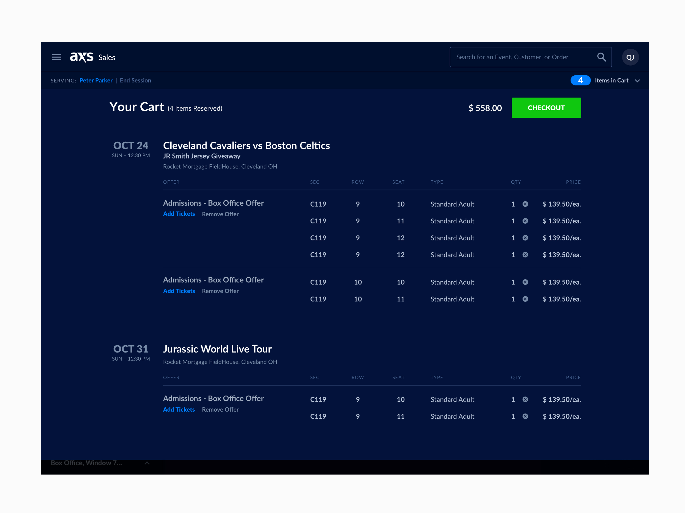
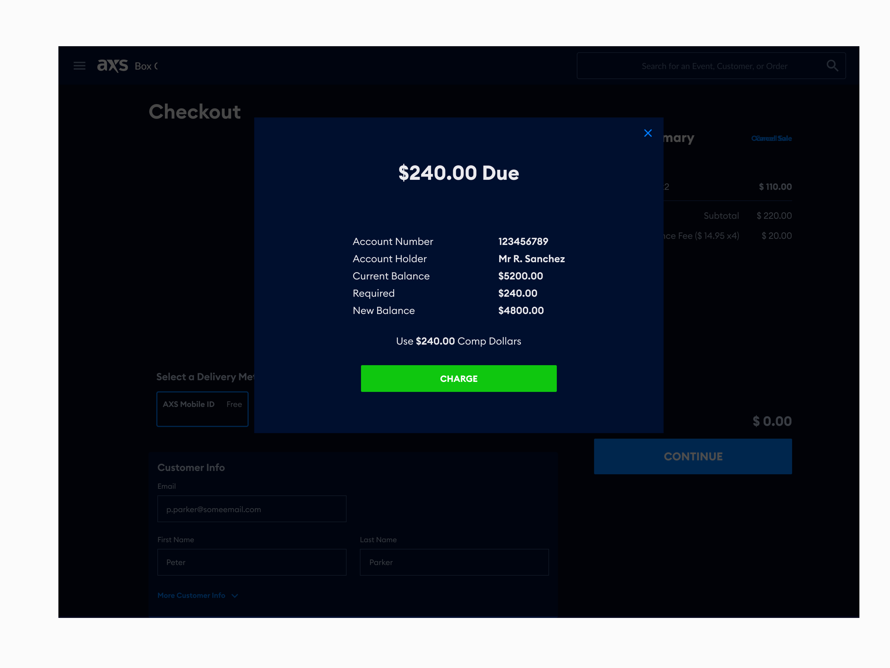
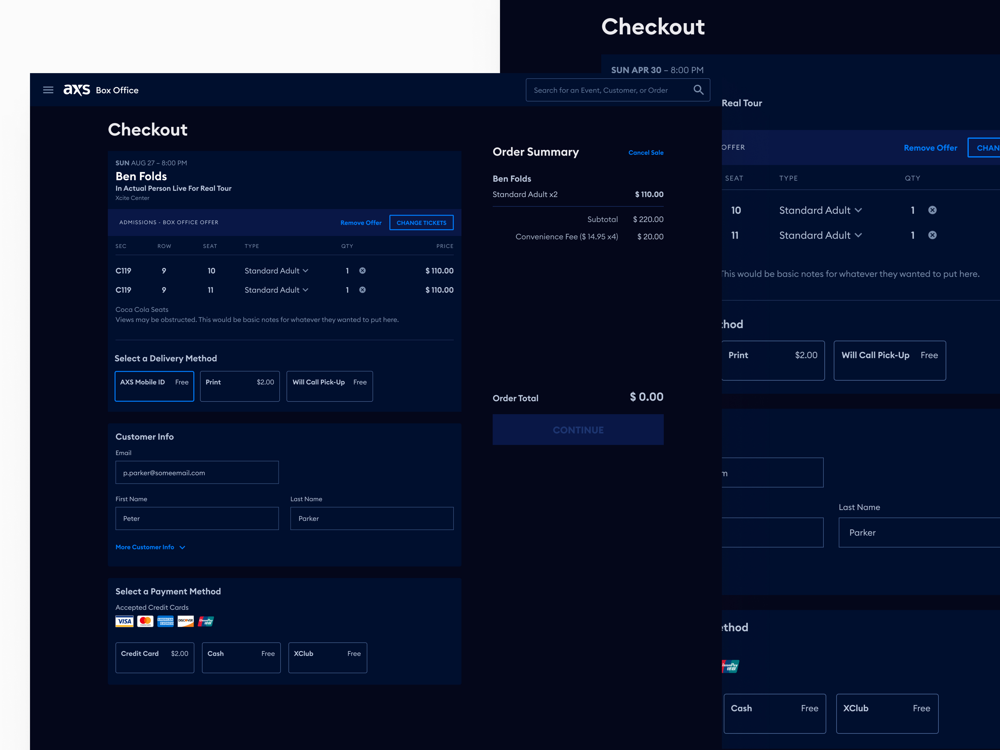
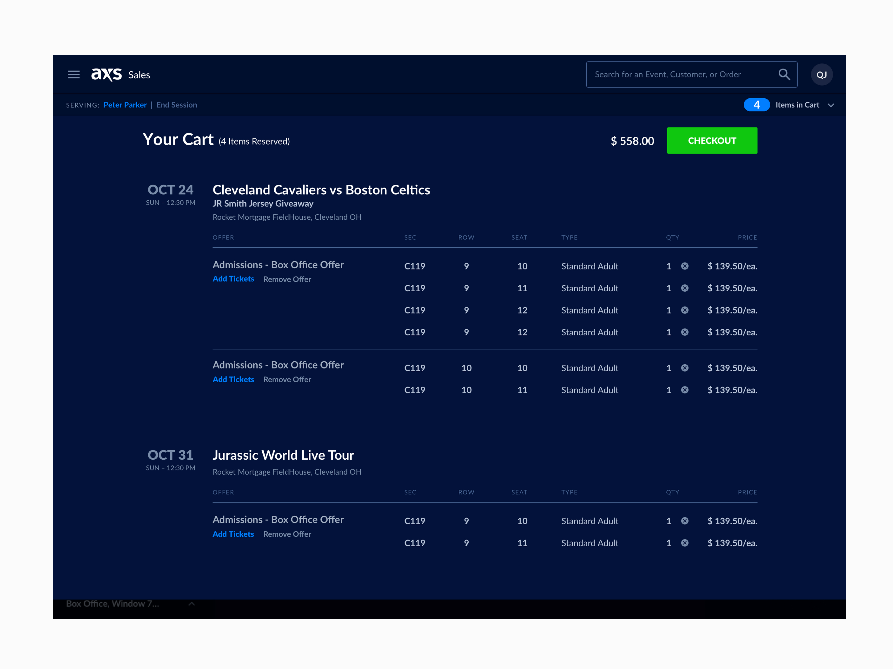
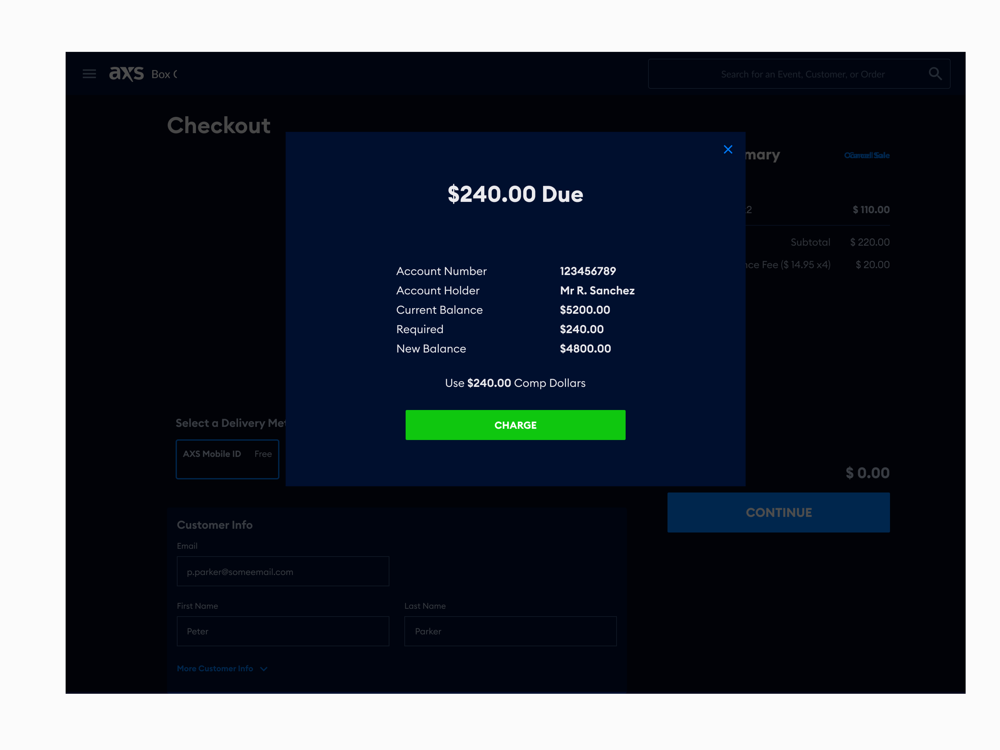
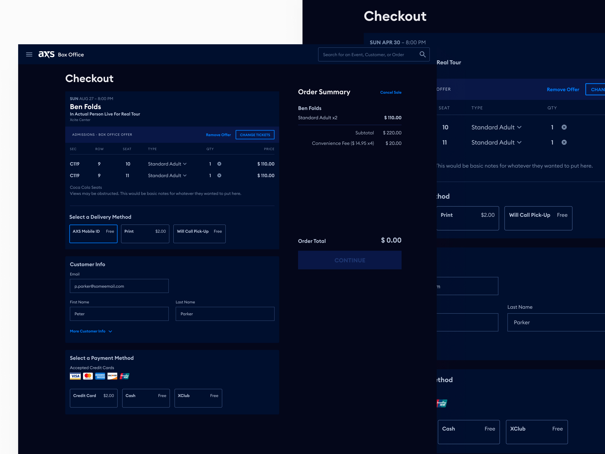

AXS
An internal tool that was also white labeled to B2B companies for event ticket sales

I was part of a team that was tasked with redesigning a functional product that hadn't been updated in 16 years. The project had a tight deadline of 3 months, and the goal was to create usable software that would bring in revenue for the company, either through its own brand or through white labeling to other companies.
To gather insights and inform our design decisions, I worked with a team of researchers to interview real users on a weekly basis. I also needed to balance the desire to create a fresh and new design with the need to maintain some degree of familiarity for users who had been using the product for 16 years.
To test my designs, I created low-fidelity mockups and prototypes using tools like Zeplin and Sketch and then tested those designs with real, active users. Through this project, I learned how to solve complex problems as part of a team of designers.
Defining the problems with the old Inventory software
The old software was not accessible. Our users said they would get eye strain from looking at the small text and bright white background in the dark while at the ticketing booth.
There wasn't a great way of quickly searching venues and events or handling triage.
Another problem with the old software was there wasn't a way to search by Ticket Type, Comps, VIP, Handicap Accessible, Different Tiers, etc.
Our Approach
We adopted a user-centered design process, conducting extensive research with both internal teams and potential B2B clients. This approach allowed us to create a modular design system that could be easily customized while retaining core functionality.
 




